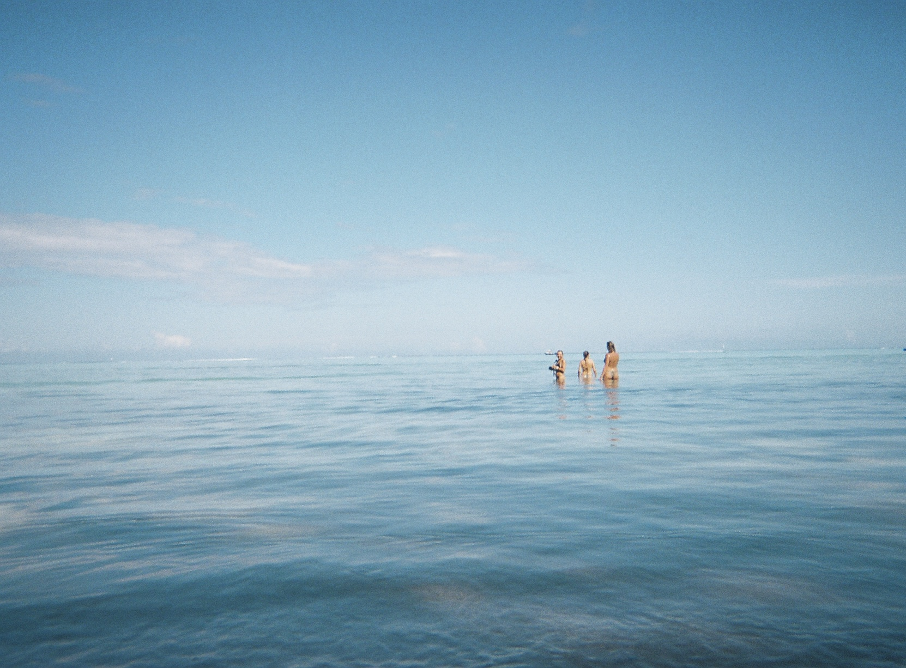

VOL. 01 / CALIFORNIA
Food, film &
other little pleasures.

An ongoing collection of things made, seen, and savored.
 THROUGH THE LENS — 001
THROUGH THE LENS — 001
 FROM THE KITCHEN — 001
FROM THE KITCHEN — 001
✳
Made with love
& good light.
01 / FROM THE KITCHENGOOD THINGS TO EAT
A little
something delicious.
Seasonal cooking, experiments, and plates worth remembering.

02 / THROUGH THE LENSPLACES & MOMENTS

Somewhere
in the sunshine.
Places I've been, friends I've met, and moments on film.
Hi, I'm Abby.
I like film, seasonal produce, the ocean, and noticing the little things. This is a place to keep them all.
SAY HELLO ↗